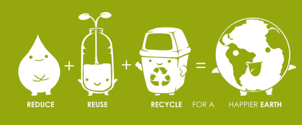

Dia Internacional de la tierra 22 de abril
Realizado por:
Galilea Garcia Cruz
4H
Especialidad:
Programacion
Submodulo:
Desarrolla aplicaciones Moviles
Docente:
Lic.Jose Antonio Gomez Hernandez


4H
Programacion
Desarrolla aplicaciones Moviles
Lic.Jose Antonio Gomez Hernandez
celebramos el dia internacional de la madre tierra para recordar que el planeta y sus ecosistemas nos dan la vida y el sustento. con este dia,asumimos, ademas, la responsabilidad colectiva, como nos recordaba la declaracion de Rio de 1992, de fomentar esta armonia cn la naturaleza y madre tierra.
Este dia nos brinda tambien la oportunidad de concientizar a todos los habitantes del planeta acerca de los problemas que afectan a la tierra y a las diferentes formas de vida que en el se desrrollan


el 22 de abril como el Día Internacional de la Madre Tierra, teniendo en cuenta que en muchos países se celebra el día de la Tierra

y con el objetivo de alcanzar un justo equilibrio entre las necesidades económicas, las sociales y las ambientales de las generaciones presentes y futuras, y para promover la armonía con la naturaleza y la Tierra.

El Día Internacional de la Madre Tierra es un recordatorio de que nuestro planeta necesita que todos y cada uno de nosotros se comprometa con esta causa y contribuya a avanzar en la dirección correcta. Llegó el momento de asumir el liderazgo para que unos a otros nos estimulemos con nuestro ejemplo.
Para muchos, el cambio climático es un problema lejano pero la realidad es que ya está afectando las vidas de animales, personas de todo el mundo y de comunidades enteras.
El mundo necesita un cambio profundo. Este 22 de abril es una oportunidad para impulsar el Día Internacional de la Madre Tierra y mostrar a nuestras comunidades lo que hacemos, que queremos nuevas acciones encaminadas a luchar contra el cambio climático. Llegó la hora de tomar la iniciativa. Por la tierra.
Vivir en armonia con la naturaleza es ser consciente de que vivimos en un planeta, llamado Tierra. Nosotros los “seres humanos” somos sus habitantes.
Vivimos en ella y nos pertenece, por ser el lugar donde habitamos.
Pero nosotros no dominamos la Vida y lo que hacemos al habitar la tierra es convivir.
La vida la ofrece la Naturaleza
Los datos e información ambiental y macroeconómica de buena calidad son esenciales. Los riesgos y beneficios potenciales y los impactos ambientales de cualquier acuerdo deben ser revisados minuciosamente por todos los involucrados.
El gobierno y otras partes interesadas necesitan tener la capacidad técnica para equilibrar los diferentes intereses y permitir que se llegue a un consenso con todas las partes para el beneficio de todos, sin dañar el medio ambiente.
Esto requiere adoptar un enfoque de todo el sistema, observar el panorama general y tener toda la información para comprender completamente los impactos de los diferentes usos de la tierra. La gestión integrada de ecosistemas, como parte del enfoque de paisajes, ve el medio ambiente como una red compleja de partes conectadas y requiere un enfoque holístico.